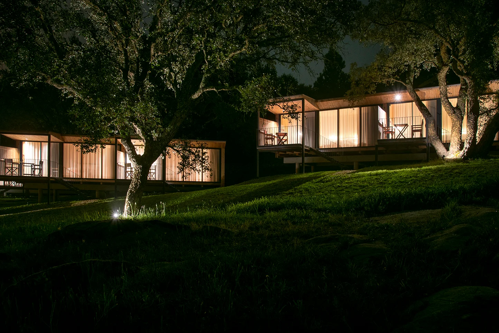
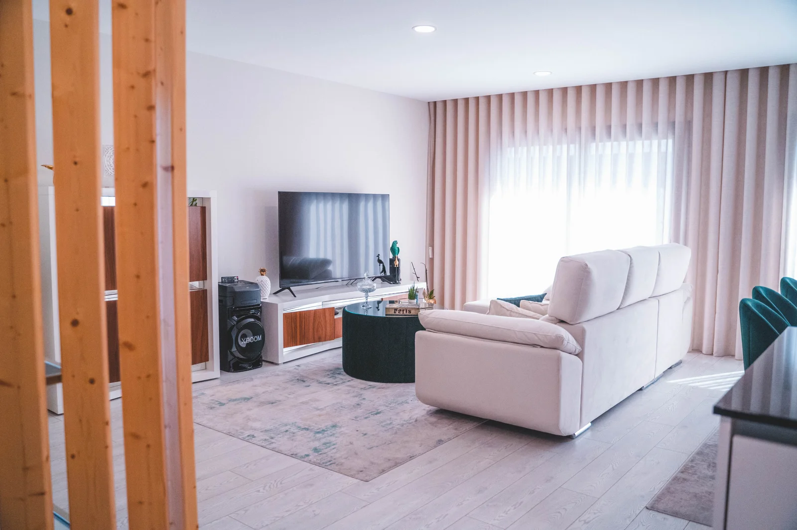
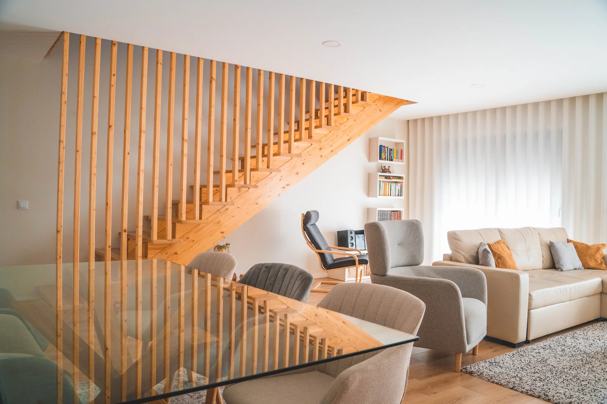
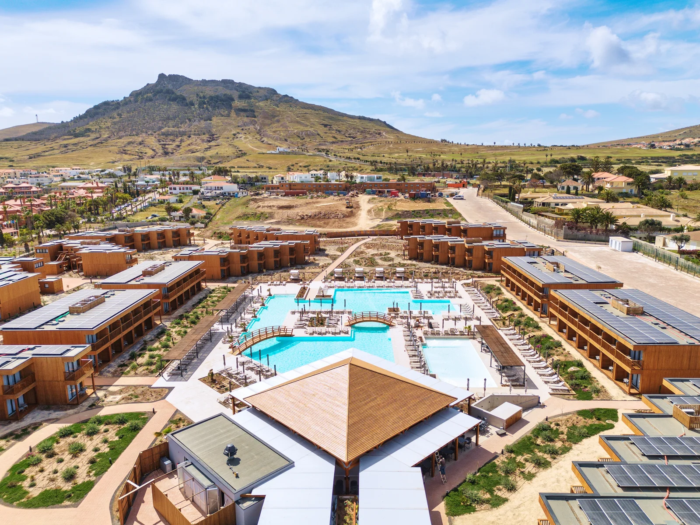

Escolher uma referência.
Organizei os exemplos por utilização e acrescentei uma escolha simples. O visitante pode apontar o que lhe interessa, sem ter de descrever uma imagem de memória.

Nogueira Fernandes · Construções em madeira
Habitação, turismo e estruturas. Explore exemplos e reúna o ponto de partida para o seu projeto.
Explorar projetosFotografia de abertura: Carlos Cezanne, conforme crédito no site oficial.
Portefólio já publicado pela empresa
Escolha uma referência para a levar para o resumo. Cada projeto tem condições próprias; as imagens não definem o âmbito de um novo trabalho.
3 projetos apresentados.

Habitação · imagem do portefólio oficial

Habitação · imagem do portefólio oficial

Turismo
Projeto apresentado pela Nogueira Fernandes. O âmbito específico deve ser consultado com a empresa.
Experimente o percurso
A referência ajuda a explicar uma intenção. Acrescente a utilização e a fase em que se encontra; a equipa poderá depois analisar o projeto concreto.
Simulação local · nada é enviadoUma proposta de Ricardo Almeida
Os vossos projetos de habitação e turismo já mostram a variedade do trabalho. Nesta demonstração, usei três exemplos publicados e acrescentei um passo entre ver uma referência e começar um pedido.
Experimentar as mudançasOrganizei os exemplos por utilização e acrescentei uma escolha simples. O visitante pode apontar o que lhe interessa, sem ter de descrever uma imagem de memória.
A referência fica acompanhada da utilização pretendida e da fase atual. Um projeto visto no site não se transforma automaticamente numa solução ou orçamento para outro local.
O resumo reúne estas escolhas e lembra os elementos ainda necessários. É uma forma de começar com contexto, mantendo a avaliação e o acompanhamento com a vossa equipa.
O que proponho filmar
Proponho acompanhar uma estrutura que possam divulgar, ligando a preparação em produção à montagem. Um detalhe de ligação entre peças, explicado pela equipa, pode acompanhar o projeto concluído no site. O visitante vê o resultado e percebe uma parte da execução; o trabalho, autorizações e momentos a filmar seriam definidos convosco.
Na Canvas Custom Furniture, fiz a filmagem, a edição e o website com integração do filme. As imagens mostram a oficina e a execução do trabalho. O visitante pode ver a execução para além de ler a apresentação da empresa.
Ver o projeto CanvasGostava de perceber que trabalhos querem destacar e como recebem os pedidos hoje.